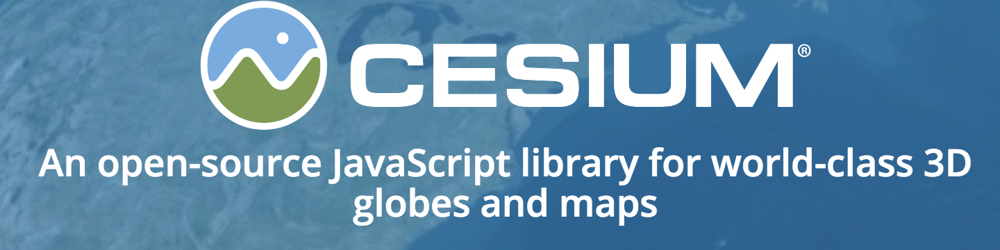

The Cryptocurrency network analyzer parses through open source network traffic data on various ports to visualize the traffic in a more digestible manner. This demonstration uses the open source data on IPv4-wide port scans available from Rapid7, an open data community that provides members access to data from Project Sonar which conducts internet-wide surveys to gain insights into global exposure to common vulnerabilities.
Some topics of interest for this project included analyzing bitcoin port scans, correlating IP addresses to location, correlation location with electricity costs, and ultimately mapping popularity of locations and their profitability over time.
The analysis of the network data will result in geolocation and correlation of location specific metrics to reveal trends. On the side navigation bar, there is a demo tab that will bring you to an interactive map showing the results of the analysis.
This demo was made possible by Rapid7 for providing the open source data and cesium consortium for providing a library to visualize our analysis.

The Big Data of Networks Visualization focuses exclusively on Bitcoin traffic.
A demonstration has been created that allows you to interactively scroll around the Earth to see locations of network traffic regarding bitcoin activity.
Furthermore, the web application allows the user to visualize bitcoin network traffic through a time series. Currently it is limited to only bitcoin, but future iterations of this demo would include scans of other ports. Please enjoy the demo!
The creators of the demo for this project are Devleena Das, Jonathan Dolan, Joshua Henson, Albert Li, Samantha Mann, and Eric Rafalovsky. All are students at Georgia Tech. This project was developed for ECE 4605, which serves to underline advanced internetworking topics. This project emphasizes the topic of big data.